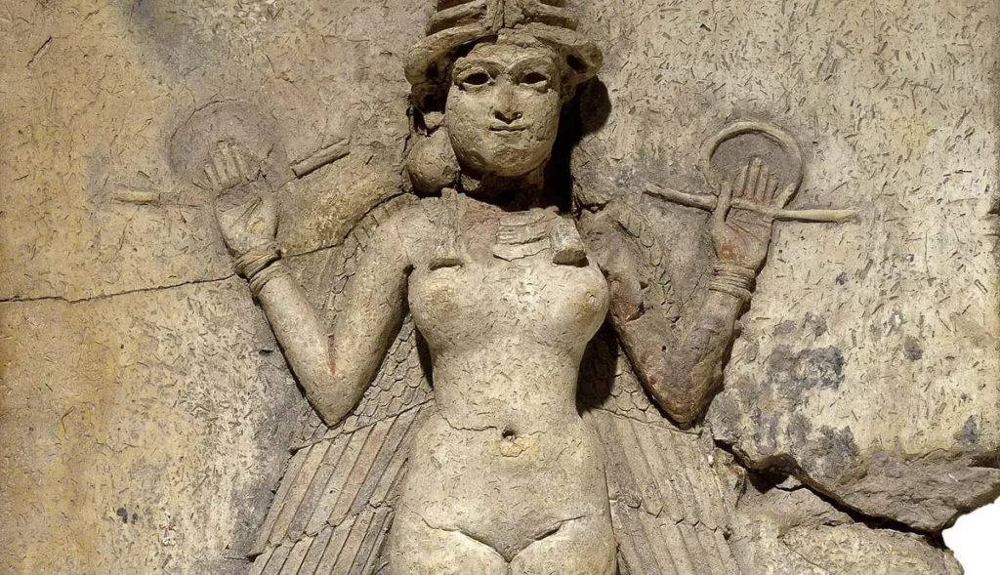
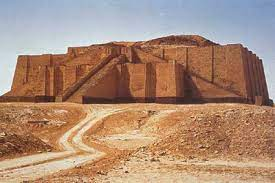
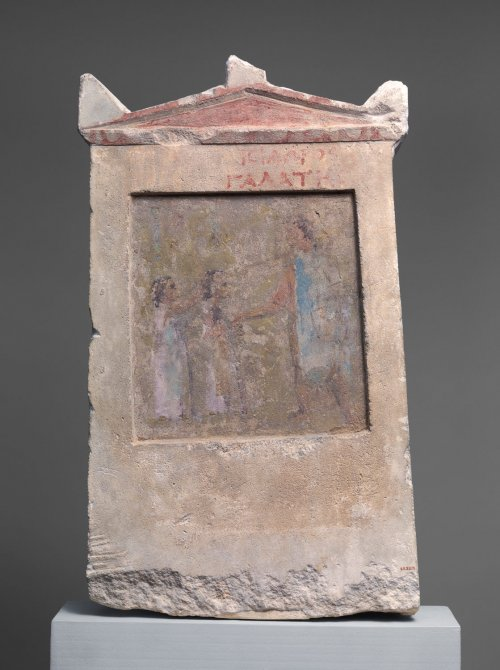
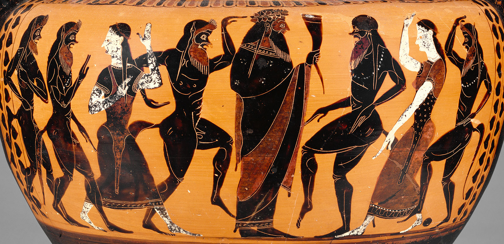
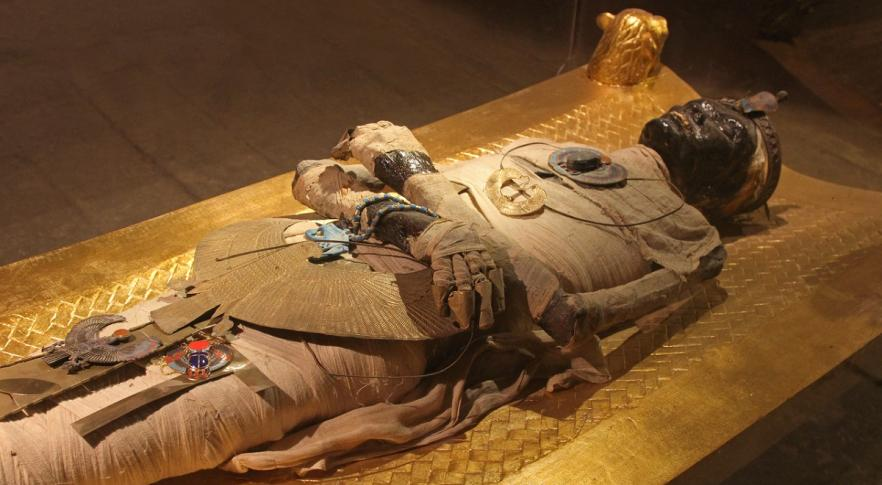
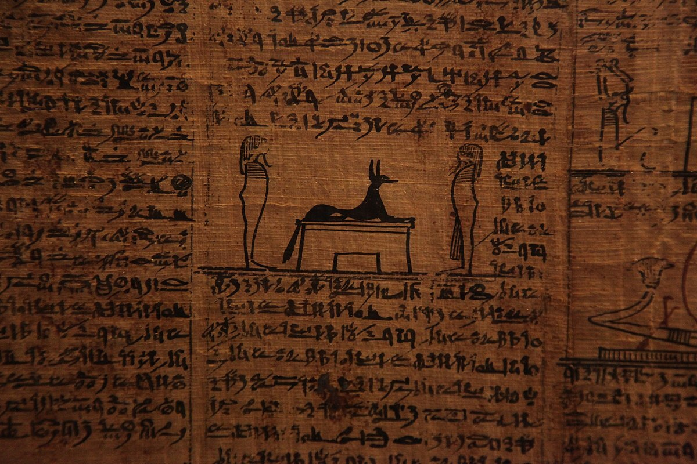

A morte sempre esteve presente no pensamento da civilização, desde a antiguidade, a sociedade tinha um ponto de vista diferente sobre a morte em cada parte do mundo. E neste capitulo iremos ter uma reflexão sobre o seu entendimento e significado.

A morte na Mesopotâmia, uma das civilizações antigas mais importantes do mundo, foi cercada por referências e rituais religiosos significativos. Aqui estão alguns aspectos importantes relacionados à morte na Mesopotâmia: Os mesopotâmios acreditavam em uma vida após a morte, mas suas influências eram complexas e variavam ao longo do tempo e entre as diferentes culturas mesopotâmicas.
Alguns acreditavam que a vida após a morte ocorria em um submundo sombrio chamado de "Irkalla" ou "Arallu", enquanto outros acreditavam em uma jornada após a morte para o "Campo de Juncos", que era uma versão mais positiva da vida após a morte. Os rituais funerários eram muito importantes na Mesopotâmia. Os mortos eram geralmente enterrados em sepulturas individuais ou familiares, e a preparação do corpo envolvia a lavagem e a perfumação. Itens pessoais, alimentos e até mesmo objetos de valor eram frequentemente enterrados com o falecido para ajudá-los em sua jornada após a morte.Lamentações e rituais de passagem desempenhavam um papel crucial nas cerimônias funerárias.Os familiares e amigos do falecido expressaram sua tristeza por meio de cânticos e lamentos. Além disso, havia muitos rituais específicos associados à passagem do falecido para o mundo dos mortos.
Os túmulos mesopotâmicos variavam em tamanho e elaboração, dependendo do status social do falecido. Algumas eram simples sepulturas em cemitérios, enquanto outras eram túmulos mais elaborados, como os zigurates de Ur. Esses monumentos serviram como locais de culto e lembrança dos mortos. Os mesopotâmios acreditavam que era importante cuidar dos mortos, garantindo que suas necessidades fossem atendidas. Isso incluía a realização de oferendas e rituais regulares em túmulos. A religião desempenhava um papel fundamental na vida dos mesopotâmios, incluindo a maneira como lidavam com

a morte. Os deuses, como Nergal, o deus da morte, tinham um papel importante na jornada dos mortos e na proteção do mundo dos vivos contra os espíritos malévolos. Os mesopotâmios acreditavam que era importante cuidar dos mortos, garantindo que suas necessidades fossem atendidas. Isso incluía a realização de oferendas e rituais regulares em túmulos. A religião desempenhava um papel fundamental na vida dos mesopotâmios, incluindo a maneira como lidavam com a morte. Os deuses, como Nergal, o deus da morte, tinham um papel importante na jornada dos mortos e na proteção do mundo dos vivos contra os espíritos malévolos.

Na Grécia Antiga, a morte era vista como uma parte natural da vida, e não havia uma concepção unificada sobre o que acontecia após a morte. Diferentes conversas e mitos sobre o destino da alma após a morte variavam de uma região para outra e ao longo do tempo. Os gregos antigos realizavam rituais elaborados para honrar os mortos. Isso incluía a lavagem e o preparo do corpo, muitas vezes com a ajuda de profissionais chamados "prótese" e "nekromanteia" (adivinhação dos mortos). Após a preparação do corpo, houve um cortejo fúnebre até o local de sepultamento. O método de sepultamento mais comum na Grécia Antiga era a inumação, ou seja, o enterro do corpo em uma sepultura. Os gregos valorizaram muito a ideia de um enterro adequado para garantir que a alma do falecido tivesse uma boa passagem para o além. Os túmulos eram muitas vezes marcados com monumentos, como estelas ou lápides.
O judaísmo é a religião monoteísta que possui o menor número de adeptos no mundo, cerca de 12 a 15 milhões. Essa religião originou-se por volta do século XVIII a.C. Candelabro de sete braços, um dos símbolos do Judaísmo. O judaísmo é a religião monoteísta mais antiga do mundo. Os judeus acreditam uma alma eterna. A morte é apenas o fim do corpo físico. Todos vivem na terra por uma razão e têm uma missão a cumprir. Porém, não há clareza sobre a vida após a morte, algumas pessoas acreditam na reencarnação (retorno do espírito em um novo corpo), outras na ressurreição (retorno ao corpo original). A posição da alma está ligada à maneira como uma pessoa vive no mundo terreno. Assim como no Candomblé, a cremação de corpos é proibida. Durante o funeral, os parentes e amigos do falecido fizeram homenagens, como discursos e libações de vinho, para lembrar a vida do falecido e garantir que sua memória fosse honrada. Além disso, as ofertas de comida e bebida eram deixadas no túmulo. As crenças sobre o que
acontecia com a alma após a morte variavam. Alguns acreditavam na existência de um submundo governado por deuses como Hades e Perséfone, aonde as almas iam após a morte. Outros acreditavam em uma forma de reencarnação ou na permanência da alma em um estado espiritual. Os gregos antigos continuavam a homenagear os mortos através de rituais, como as festas das antesterias em Atenas, onde os espíritos dos mortos eram convidados a retornar para receber oferendas de vinho.


Os egípcios acreditaram firmemente na vida após a morte. Eles acreditavam que a morte não era o fim, mas o início de uma jornada para o outro mundo, onde a alma (ka e ba) do falecido continuaria a existir. Um dos aspectos mais conhecidos da cultura funerária egípcia é a prática da mumificação. Acreditavam que a preservação do corpo era essencial para a sobrevivência da alma no além. O processo de mumificação era complexo e envolvia a
remoção dos órgãos internos, a secagem do corpo e a sua proteção com bandagens. O Livro dos Mortos, uma coleção de textos e feitiços, era frequentemente colocada com o falecido para ajudar em sua jornada para o além e fornecer instruções sobre como superar obstáculos e alcançar a vida após a morte. Eles construíram túmulos elaborados, como as pirâmides, para abrigar os corpos dos faraós e pessoas de alta posição social. Os túmulos eram preenchidos com tesouros, comida, e outros bens que o falecido poderia precisar na vida após a morte além de acreditaram em diversos deuses

associados à morte e ao além, como Osíris e Anúbis. Acreditavam também em um julgamento após a morte, onde o coração do falecido era pesado em uma balança contra a pena da deusa Maat. Se o coração fosse mais leve que a pena, a alma poderia entrar no reino dos mortos. Se fosse mais pesado, era devorado por um monstruoso. Os egípcios faziam ofertas regulares aos espíritos dos mortos, incluindo comida, bebida e objetos pessoais, para garantir que eles fossem bem tratados no além. Anualmente, havia o Festival de Órion, onde os egípcios acreditavam que as almas dos mortos retornavam temporariamente ao mundo dos vivos. Isso foi uma oportunidade para prestar homenagens aos ancestrais.